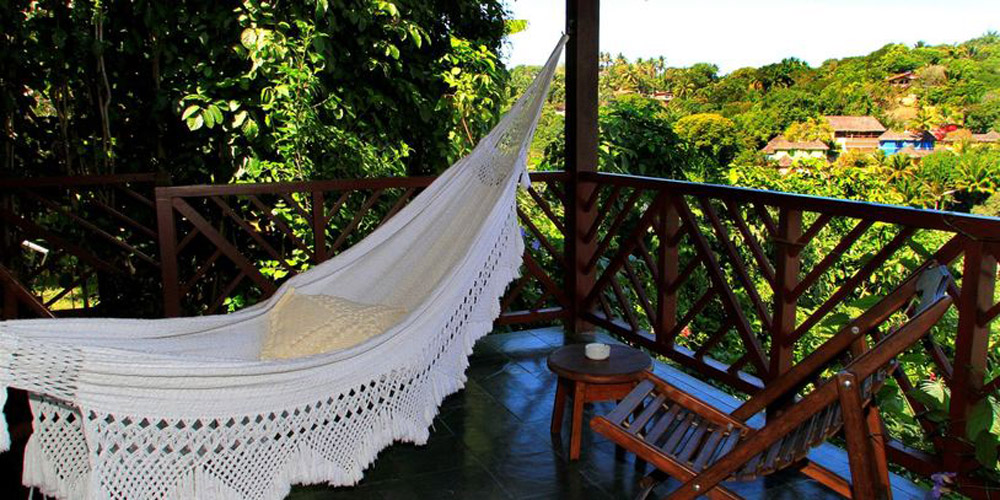
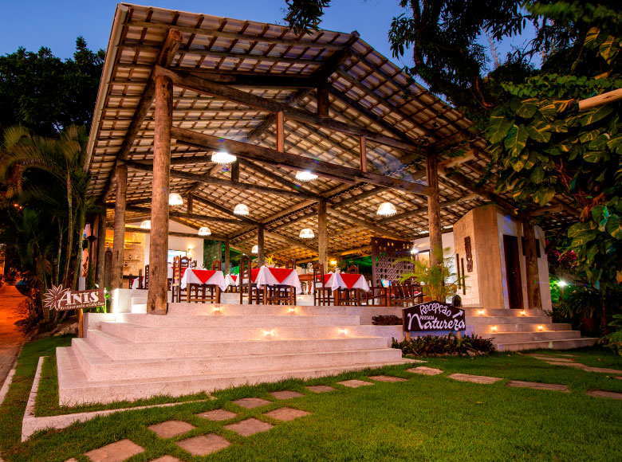

Bem vindo ao recando da Natureza!
O Recanto da Natureza foi planejada nos mínimos detalhes para garantir o seu conforto. Está localizada em local privilegiado: calmo e rodeado de verde. Conta com suítes confortáveis e bem equipadas, piscina, WI FI, estacionamento, restaurante e sala de jogos. O Café da manhã é servido de frente para a piscina. Hospede-se conosco e tenha uma ótima experiência.
Na pousada Você poderá apreciar o cantar dos pássaros pela manhã em um local agradável. São 17 anos de dedicação em bem receber, onde buscamos atender as necessidades de nossos clientes, a pousada conta com 24 aptos, estamos dedicados a um atendimento personalizado para pessoas que buscam um local tranquilo, onde você vai se sentir em casa, pois trabalhamos com casais e famílias que vem em busca de um ambiente acolhedor e familiar, para melhor atender não trabalhamos com grupos, atendemos somente particulares. Nosso diferencial destaca-se pelo bom atendimento. Conta com acomodações equipadas com ar condicionado quente e frio, micro-ondas, frigobar, Televisão LCD e secador de cabelo, e além disso, oferecemos garagem.